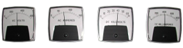

This portion of the App does not know what your TR sets and controls are rated at and so cannot absolutely determine what a normal set of readings might be. The above meters are typical (or normal) for a TR set rated as follows:
As can be seen from the meter positions above, none of the meters are indicating the maximum rating of the TR set. They are not specifically low in any instance. The conclusions would in this instance be: The control is sparking and provided the AVC response is satisfactory – Operation is Normal. The control is limited by the AVC to one or more of the setpoints as shown in the meters and the control is not sparking – Operation is Normal. The Opacity is within defined limited and an energy management routine is in operation – Operation is Normal. We value comments to this App and look forward to hearing any you may have.